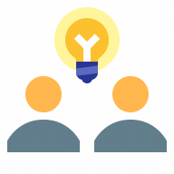

Recently
ADP
At ADP, I drive the UX strategy and modernization of our service technology ecosystem. These mission-critical internal tools are relied on daily by over 18,000 service representatives worldwide to support the global workforce.
My role is to navigate the massive scale and complexity of a legacy environment to design experiences that make work simpler, faster, and more productive.
Before that…
ProSight Specialty Insurance
I joined ProSight as the third designer on the team, playing a key role in pioneering the UX practice.
My mission was to introduce modern, user-centered design to a traditionally conservative industry, transforming how brokers and underwriters manage specialized commercial risk.
…and before that…
SPS Commerce
At SPS, I led the design of a collaborative analytics product for retail point-of-sale data. I focused on enabling real-time collaboration directly within the data—allowing retailers to have threaded discussions in context, align quickly, and make confident decisions.
…and even before that.
Fareportal
At Fareportal, I prioritized responsive design, automation, and self-service solutions to boost conversion rates, significantly reduce customer support calls, and enable call center teams to focus on higher-value, revenue-generating opportunities.
I lead teams through ambiguity.
Enterprise software is rarely straightforward. I partner closely with engineering and product to take messy, undefined problems and turn them into clear, actionable design strategies. My role isn't just about crafting interfaces. It's about building consensus, answering the hard questions early, and getting everyone aligned and moving in the exact same direction.
Strategic Facilitation & Alignment
Design is not just about deliverables—it's about consensus. I bring cross-functional stakeholders into the process early, facilitating workshops that help teams articulate ideas, define shared goals, and align on a unified vision.
Deep Domain Mastery
I thrive in highly technical, regulated, or complex industries. I rapidly assimilate deep domain knowledge, partnering with PMs and SMEs to frame ambiguous problems and translate them into intuitive workflows.

Craft Leadership & Mentorship
Building enterprise products is a team sport. I actively elevate the design maturity of my teams by mentoring fellow designers, establishing best practices, and fostering a culture of rigorous, user-centered critique.
End-to-End Design & Systems Thinking
While my focus is on strategic alignment, my foundation is rooted in deep UX and interface design craft. I scale solutions across the end-to-end process—from generative research and service mapping to high-fidelity systems design.
I get tough jobs done and have fun doing it.
Don’t just take my word for it—here are a few words from colleagues I’ve worked with in the past.
Jim is one of those really hard-to-find designers who can blend a wealth of technical know-how with top-notch design skills. Jim's ability to deal with ambiguity is off the charts. He has the rare ability to extract meaning from fuzzy and disjointed requirements and assimilate it into a meaningful design.
Chuck Mallott, Design Director at SPS Commerce
Jim is an enthusiastic team player that I've been lucky to work with. He always does a great job managing his own work while being willing and enthusiastic to share his skills with others. He has helped me navigate many UX and design challenges all with a smile on his face.
Sara Fioravanti, Senior Designer at ProSight
Let's work together.
Like what you see? Great to hear! Even if I’m not actively on the job hunt, I’m always curious about interesting challenges and love hearing about opportunities to make an impact.
Here’s what I look for in a role:
- Remote-first: I work best from my own environment. Having spent years in the 4-hour commute grind, a remote-first culture is non-negotiable for my productivity and my family.
- Deep Complexity: I love turning chaotic, complicated interfaces into experiences that feel clear, simple, and efficient.
- Workflow Products: I’m happiest when I’m making someone’s day easier, their work faster, and their tools more enjoyable to use.
- Individual contributor: I want to lead the work, not the org chart. I thrive when I can shape the big-picture vision and mentor the team without the overhead of people management.
If your role checks these boxes, don't hesitate to reach out →